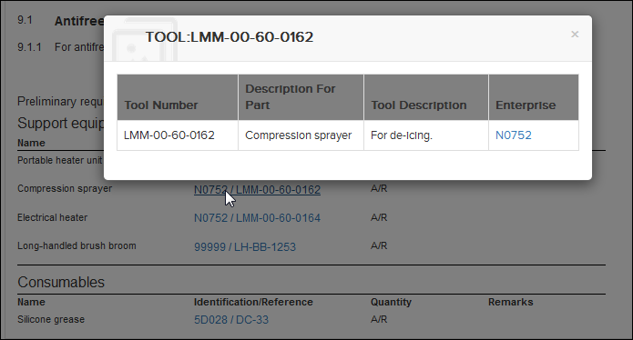
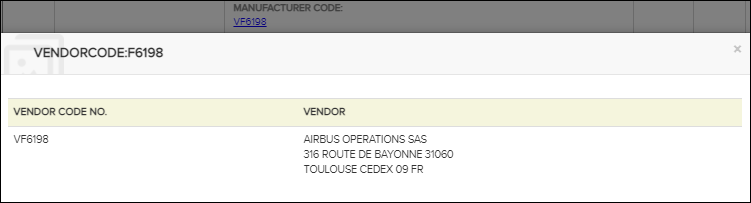

Les références aux objets dans les modules de données de TIR et CIR peuvent apparaitre, par exemple, dans la section de condition préalable d'un module de données de procédure ou dans les modules de données IPD. Ces références apparaissent comme des liens hypertexte en bleu. Lorsque vous cliquez sur ce type de lien, vous verrez une boîte de dialogue TIR / CIR s'afficher.

Exemple de boîte de dialogue TIR
Comme vous pouvez le voir dans l'illustration ci-dessus, la boîte de dialogue affiche des informations sur l'élément sélectionné. Le type d'informations affichées dépend du type TIR/CIR. La boîte de dialogue peut également contenir des liens, par exemple pour les entreprises ou les chiffres.

Exemple de dialogue fournisseur